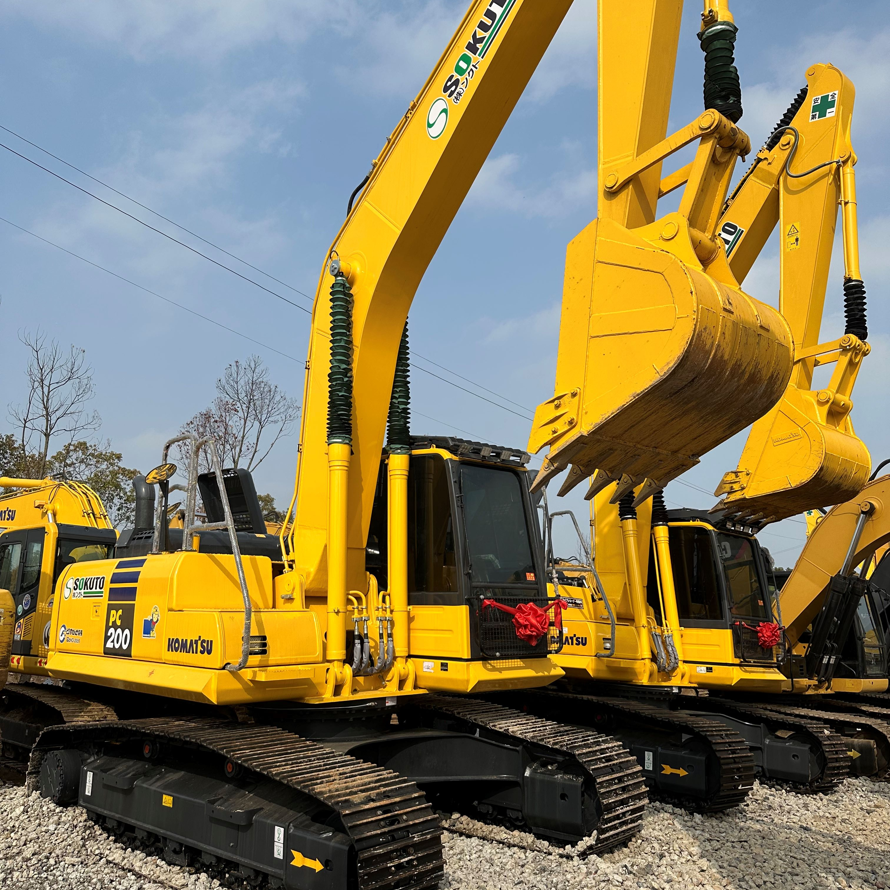

Refurbished Komatsu PC200 Excavator
The Komatsu PC200 is a highly regarded hydraulic excavator, known for its exceptional reliability, performance, and versatility in a wide range of construction, mining, and excavation tasks. Refurbished units offer a cost-effective alternative to purchasing new equipment, providing businesses with high-quality machinery at a fraction of the price.
Honestly, it's almost impossible to buy a brand new excavator from China. They either don't exist or are made in China. If a Chinese seller tells you their Caterpillar/Komatsu/Volvo/Kobelco/Hitachi is brand new, they're lying. Therefore, a refurbished excavator is your best bet.

Here are the detailed specifications for a refurbished Komatsu PC200LC-8 excavator:
Operating Weight and Dimensions
- Operating Weight: 20,600–21,800 kg
- Overall Length: ~9.9–10.2 meters
- Overall Width: ~2.98–3.2 meters
- Overall Height: ~3.1–3.2 meters
- Tail Swing Radius: ~3.0–3.2 meters
- Ground Clearance: ~470 mm
- Track Width: 600–700 mm standard
Engine and Powertrain
- Engine Model: Komatsu SAA6D102E-2 (Tier 2 compliant)
- Rated Power Output: ~148–155 hp (110–116 kW) @ 2,000 rpm
- Maximum Torque: ~720–760 Nm
- Fuel Tank Capacity: ~400 liters
- Travel Speed: 3.4–5.5 km/h
- Swing Speed: ~10 rpm
- Gradeability: Up to 70% (35°)
Hydraulic System
- Main Pump Type: Closed Center Load Sensing (CLSS) axial piston pumps
- Flow Rate: ~2 × 210–230 L/min
- System Pressure: Up to 34.3 MPa
- Hydraulic Oil Capacity: ~240 liters
- Boom Cylinder Bore: ~130 mm
- Arm Cylinder Bore: ~115 mm
- Bucket Cylinder Bore: ~105 mm
Performance Metrics
- Bucket Capacity: 0.9–1.1 m³ (SAE heaped)
- Max Digging Depth: ~6.5–6.8 meters
- Max Reach (Horizontal): ~10.0–10.2 meters
- Max Dump Height: ~6.7–6.9 meters
- Bucket Digging Force: ~150–160 kN
- Arm Digging Force: ~110–120 kN
Cab and Operator Features
- Cab Type: ROPS/FOPS certified
- Display: LCD monitor with diagnostics and fuel tracking
- Controls: Pilot-operated joysticks with customizable sensitivity
- Comfort: Air suspension seat, climate control, low vibration cab
- Visibility: Rear-view camera, LED work lights, wide glass area
Smart Features and Efficiency
- Fuel Efficiency: Electronic engine control + auto idle shutdown
- Emissions Control: Tier 2 compliant (no DPF or SCR)
- Telematics Ready: KOMTRAX system for remote diagnostics and fleet tracking
- Attachment Memory: Preset hydraulic settings for multiple tools
Attachments Compatibility
- Standard Bucket: 0.9–1.1 m³
- Optional Tools: Hydraulic breaker, demolition shear, compactor, ripper
- Quick Coupler: Hydraulic or manual options available
Refurbishment Scope
Refurbished PC200 units typically include:
- Engine Overhaul: Turbocharger, injectors, seals, cooling system
- Hydraulic Restoration: Pump recalibration, valve block testing, hose replacement
- Electrical Diagnostics: Monitor, sensors, wiring harness
- Cab Reconditioning: Seat, joysticks, HVAC, repainting
- Structural Repairs: Boom/bucket welding, bushing replacement, undercarriage rebuild
Overview of the Komatsu PC200 Excavator
The Komatsu PC200 is part of the renowned Komatsu PC series, offering robust performance in medium to large-scale projects. With its operating weight ranging from 20 to 22 tons, this machine is a workhorse for tasks such as digging, trenching, lifting, and material handling. Its well-balanced design, combined with efficient hydraulics, makes the PC200 an ideal choice for jobs that require precision, power, and stability.
Key Specifications of the Komatsu PC200
-
Operating Weight: 20,000–22,000 kg (44,000–48,500 lbs)
-
Engine Power: 110–125 kW (148–167 hp)
-
Max Digging Depth: 6.3–6.7 meters (20.7–22 feet)
-
Max Reach: 9.8 meters (32.2 feet)
-
Bucket Capacity: 0.8–1.2 cubic meters
-
Travel Speed: 5.3 km/h (3.3 mph)
-
Fuel Tank Capacity: 400 liters (105.7 gallons)
These specifications provide the PC200 with the versatility to operate in various environments and handle both heavy-duty and precise tasks with ease. Its hydraulic system, combined with its digging force, makes it an excellent choice for excavation in tough ground conditions.
Engine and Hydraulics for Efficient Performance
The Komatsu PC200 is powered by a high-performance diesel engine designed for both power and efficiency. When refurbished, these machines undergo rigorous testing to ensure that the engine and hydraulic systems are in top working order, guaranteeing reliable performance.
-
Fuel-Efficient Engine: The PC200 uses a fuel-efficient engine that ensures lower operational costs without compromising power.
-
Hydraulic Efficiency: The load-sensing hydraulic system adjusts the hydraulic flow depending on the work requirements, improving fuel consumption while maximizing performance.
-
Emissions Control: Many refurbished units are updated with emissions-friendly components, ensuring that the machine meets modern environmental standards.
Undercarriage and Durability
The Komatsu PC200 is designed for longevity, especially in tough environments. Its undercarriage is built to withstand the rigors of continuous operation on challenging terrains. When refurbished, the undercarriage components (such as tracks, sprockets, and rollers) are carefully inspected, repaired, or replaced to restore the machine’s original durability.
-
Heavy-Duty Tracks: The machine’s tracks are designed for durability and can handle tough soils, gravel, and rocky terrains.
-
Robust Undercarriage: The PC200 is built with a robust undercarriage designed to provide stability and smooth operation on uneven surfaces.
-
Refurbished Components: During refurbishment, the undercarriage is fully inspected and repaired, ensuring that the machine has a longer life with minimal wear and tear.
Operator Comfort and Safety
Operator comfort is a key factor in the Komatsu PC200’s design. The excavator’s cabin provides a spacious, ergonomically designed environment that reduces operator fatigue and increases productivity.
-
Ergonomic Cabin: The cabin is spacious, with adjustable seating and well-positioned controls for easy operation. It also features excellent visibility to the working area, ensuring a safe and efficient working environment.
-
Safety Features: The PC200 includes safety measures such as ROPS (Roll-Over Protective Structure) and FOPS (Falling Object Protective Structure) to protect the operator during operations. Additionally, the machine has alarms and intuitive controls to reduce the risk of accidents.
-
Reduced Vibration: The cabin is equipped with shock-absorbing features to minimize vibrations, making it more comfortable for operators during long hours of use.
Benefits of Choosing a Refurbished Komatsu PC200
Opting for a refurbished Komatsu PC200 offers several advantages, especially for businesses looking to maximize their investment while maintaining high operational standards.
-
Cost-Effective: A refurbished Komatsu PC200 costs significantly less than a new model, providing businesses with savings that can be allocated to other areas of operations.
-
Comprehensive Refurbishment Process: Refurbished units undergo a thorough inspection and repair process, ensuring that key components such as the engine, hydraulics, undercarriage, and cabin are restored to peak performance.
-
Warranty and Support: Many refurbished units come with a limited warranty, which offers peace of mind and protection against unexpected repairs.
-
Sustainability: Purchasing refurbished machinery is an environmentally responsible choice, as it reduces the demand for new manufacturing and extends the life of the machine.
Maintenance Tips for a Long-Lasting PC200
While the Komatsu PC200 is a durable and reliable excavator, proper maintenance is essential to ensure that it continues to perform optimally throughout its lifespan.
-
Regular Inspections: Schedule routine inspections to check the engine, hydraulic systems, and undercarriage for any signs of wear or damage.
-
Fluid and Filter Changes: Regularly change the engine oil, hydraulic fluid, and filters to ensure the machine operates efficiently.
-
Track Maintenance: Inspect the tracks and undercarriage for excessive wear, and adjust the track tension as needed to avoid unnecessary strain on the components.
-
Cabin Care: Clean and maintain the cabin, checking for any damage or wear to safety features, controls, or comfort systems.
Conclusion
The Komatsu PC200 Excavator is a reliable, versatile, and efficient machine that has earned a reputation for high performance in various industries, from construction to mining. Opting for a refurbished PC200 offers an affordable solution without compromising on quality. With regular maintenance and care, a refurbished PC200 can provide years of productive service, making it an excellent investment for businesses looking to expand their fleet while maintaining budget efficiency. Whether used for digging, lifting, grading, or material handling, the PC200 is a powerful tool capable of tackling diverse tasks with ease.
Our Commitment
- 2 years / 4000 hours warranty.
- EPA certified.
- No sweatshop labor.
Contacts

- [email protected]
- Youtube Instagram Facebook
- Navigation: G206 (Sishu Bridge) in Changfeng County, Hefei City, Anhui Province, 200 meters north to the east